|
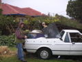
Loading up at Thomas Street |
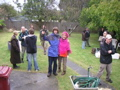
People start arriving. |
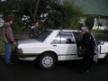
The lovely Monica from Moonee ponds arrives with a whole carfull of trees and cuttings to share! |
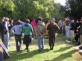
Introductions and everyone's thoughts on what permaculture is. |
|
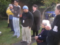
Nelson's turn! |
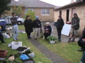
Monica's turn! |
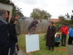
Reviewing the TO DO list |
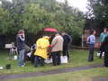
And away we go, with some eager seed planting. |
|
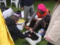
|
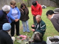
Carey leading a workshop on propogating from cuttings. Notice how spellbound are the audience! |
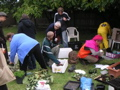
It was a literal hive of garden-making madness! |
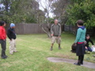
Then it was chook tractor time, here Adrian shares his thoughts on location, location, location. |
|
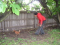
After a demonstration of the concept using models, it was time to catch the chickens. Go Asha go! |
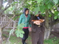
Nice team effort from Laura and Judy-Anne |
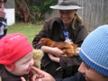
|
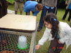
And the cooch-eating tractor was launched! |
|
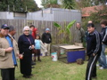
And I'll bet that banana won't mind nibbling on some of that nitrogenous chook poo! |
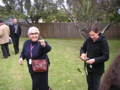
Monica running around with another cutting and Di dicing up the next. |
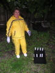
Martita's new seed batch. |
Permaculturalists young and, well, young (Vilma tells us the garden we set up last time is going great, by the way). |
|
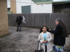
Loading up the car with their new trees (plum and advocado) and cuttings. |
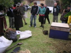
Compost time! |
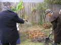
With fireman Wille from Chile |
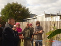
|
|
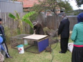
|
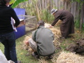
Layers upon layers of grass clippings, straw, cow poo, leaves and sawdust. |
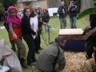
|
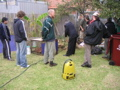
We also emptied in the vacuum cleaner bag - full of hair and thus nitrogen. |
|
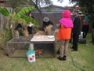
|
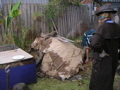
Isn't it beautiful! |
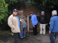
Now, time to fire up the barbie! |
We soon regretted giving 76-year-old Willie wheatgrass juice - he was bouncing off the walls and twirling women around the dance floor till midnight. |
|
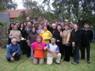
And here they are - what a colourful bunch! |
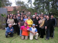
|
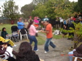
Then came a demonstration of street salsa - magnificent! |
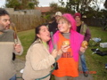
with backing vocals |
|
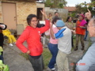
and Asha and Willie getting right on down |
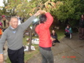
|
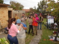
|
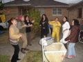
|
|
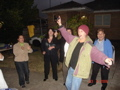
Go Mat! |
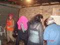
and then the remaining (all South Americans plus an Irishman!) folks went in the garaage and partied till midnight! |
Willie's still riding out the wheatgrass shot here I'd say... |
|
|
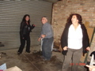
They certainly look like they've having fun! |